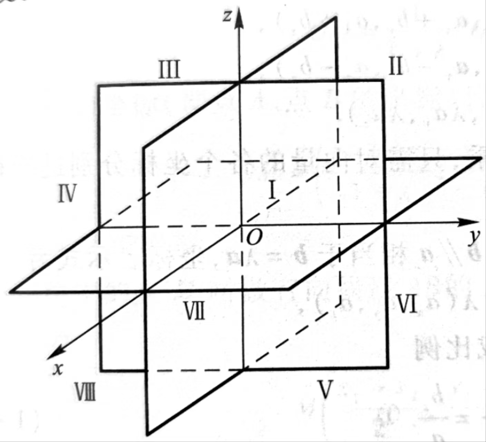

既有大小又有方向的量.
$$\boldsymbol{a} = (x,y,z)$$ 向量的模向量的大小.
$$|\boldsymbol{a}| = \sqrt{x^2 + y^2 + z^2}$$ 单位向量\(|\boldsymbol{a}| = 1|\)的向量.
零向量\(|\boldsymbol{a}| = 1|\)的向量，记作\(\boldsymbol{0}\).
零向量的方向是任意的.
两向量的夹角向量尾尾相连的夹角.

设平面法向量\(\boldsymbol{n} = (A,B,C)\)，在平面上任取两点\((x,y,z)\)与\((x_0, y_0, z_0)\).故向量\((x-x_0, y-y_0, z-z_0)\)与\(\boldsymbol{n}\)垂直.
点法式 $$A(x-x_0) + B(y-y_0) + C(z-z_0) = 0$$ 一般式 $$Ax + By + Cz -(Ax_0 +By_0 + Cz_0) = 0$$令\(Ax_0 + By_0 + Cz_0 = D\)，有
$$Ax + By + Cz + D = 0$$ 截距式设平面与\(x,y,z\)轴的截距分别为\(a,b,c\)
$$\frac{x}{a} + \frac{y}{b} + \frac{z}{c} = 1$$| 特殊平面 | |
| 过x轴的平面 | $$By + Cz = 0 \Rightarrow y + tz = 0$$ |
| 过y轴的平面 | $$Ax + Cz = 0 \Rightarrow x + tz = 0$$ |
| 过z轴的平面 | $$Ax + By = 0 \Rightarrow x + ty = 0$$ |
以过x轴的平面为例：
点\((x,0,0), x\in \mathbb{R}\)均位于该平面内，带入一般式\(Ax + By + Cz + D = 0\)得：
$$Ax + D = 0 \Rightarrow By + Cz = 0$$设方向向量\(\boldsymbol{s} = (a,b,c)\)与直线平行，在直线上任取两点\((x,y,z)\)与\((x_0, y_0, z_0)\)构成向量\((x-x_0, y-y_0, z-z_0)\).
对称式 $$\frac{x-x_0}{a} = \frac{y - y_0}{b} = \frac{z - z_0}{c} = t$$ 参数式 $$\begin{cases} x = x_0 + at\\ y = y_0 + bt\\ z = z_0 + ct \end{cases}$$点\((x_0, y_0, z_0)\)到平面\(Ax + By + Cz+ D = 0\)的距离
$$d = \frac{|Ax_0 + By_0 + Cz_0|}{\sqrt{A^2 + B^2 + C^2}}$$ 点到直线的距离点\((x_0, y_0, z_0)\)到直线\(\frac{x - x_1}{l} = \frac{y - y_1}{m} = \frac{z - z_1}{n}\)的距离
$$d = \frac{|(x_1 - x_0, y_1 - y_0, z_1 - z_0)\times(l,m,n)|}{\sqrt{l^2 + m^2 + n^2 }}$$隐函数：\(F(x,y,z) = 0\Rightarrow z = z(x,y)\)
显函数：\(z = f(x,y)\)
一般式：
$$\begin{cases}F(x,y,z)=0\\G(x,y,z)=0\end{cases}$$参数式：
$$\begin{cases}x=x(t)\\y=y(t)\\z=z(t)\end{cases}$$设\(L\)为\(yoz\)平面上的一条曲线，其方程为\(\begin{cases}f(y,z)=0\\x=0\end{cases}\)
曲线绕\(y\)轴旋转所得的旋转曲面方程为
$$f(y, \pm\sqrt{x^2+z^2}) = 0$$曲线绕\(z\)轴旋转所得的旋转曲面方程为
$$f(\pm \sqrt{x^2 + y^2}, z) = 0$$